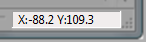

Mouse Position
The mouse position display is located at the bottom right of the main window.

The mouse position display is active only when the mouse pointer is inside the map display. It displays the current paper coordinates of the mouse pointer (in mm).